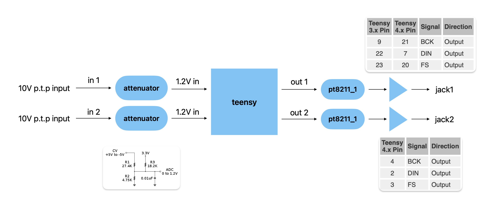

ott module
to-do
[ ] tekening maken om te zien of er onderdelen missen
teensy
eurorack module met teensy:
https://ornament-and-cri.me/hardware-basics/
motherboard -> teensy naar eurorack shield
https://github.com/ghostintranslation/motherboard/
14 in / 16 out eurorack shield
https://github.com/newdigate/teensy-eurorack
cv input
https://dorkbotpdx.org/blog/paul/control_voltage_cv_to_analog_input_pin/
dac
mcp4921
twee pt8211 chips mogelijk
eurorack standaard
Audio signals are typically a maximum of 10 V peak-to-peak (i.e. between −5 V and +5 V).

Control voltages can either be unipolar or bipolar.
Bipolar control voltages are typically 5 V peak-to-peak (i.e. from −2.5 V to +2.5 V), unipolar voltages between 0 V
and 8 V.
idee
knop om OTT’s te stacken